07/10/2026 — ST chênh lên tăng dần. Đã loại trừ nhồi máu cơ tim. Hẳn là viêm màng ngoài tim, đúng không?
Bản dịch tiếng Việt của bài "Increasing ST Elevation. MI ruled out. Must be pericarditis, right?" – Dr. Smith’s ECG Blog. Giữ nguyên toàn bộ 12 hình ảnh của bản gốc.

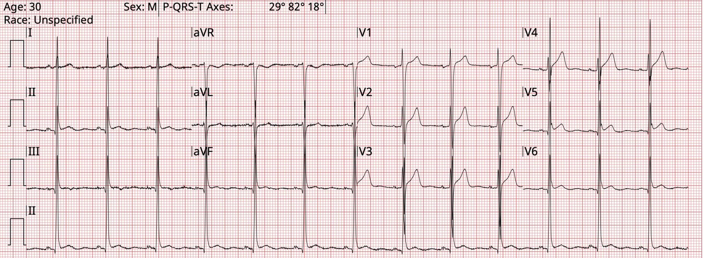
Phần trình bày ca bệnh của Willy Frick
Smith: Ca này làm tôi nhớ đến ca sau: 31 Year Old Male with RUQ Pain and a History of Pericarditis. Submitted by a Med Student, with Great Commentary on Bias! (Nam 31 tuổi đau hạ sườn phải và có tiền sử viêm màng ngoài tim. Do một sinh viên y khoa gửi, kèm bình luận tuyệt vời về thiên kiến!)
= = =
Ca bệnh
Một người đàn ông 30 tuổi có tăng huyết áp được đưa vào bệnh viện với lý do chính đến khám là đau ngực.
Bệnh sử do đội cấp cứu ngoài viện (EMS) ghi nhận: “Bệnh nhân xanh xao, da ấm và vã mồ hôi, đang ngồi bên ngoài và than đau ngực. […] Bệnh nhân được cho dùng 324 mg aspirin đường uống (PO) và 0.4 mg nitroglycerin ngậm dưới lưỡi theo phác đồ. Sau khi dùng nitroglycerin, huyết áp của bệnh nhân giảm từ 160/100 mmHg xuống 130/80 mmHg. Bệnh nhân cho biết đau ngực đã đỡ. Bệnh nhân được chuyển đến [bệnh viện]. Không ghi nhận thay đổi nào về tình trạng bệnh nhân trong quá trình vận chuyển.”
Đội EMS đã ghi bốn điện tâm đồ trong quá trình vận chuyển; mốc thời gian được kèm theo để tham chiếu.
Điện tâm đồ 1

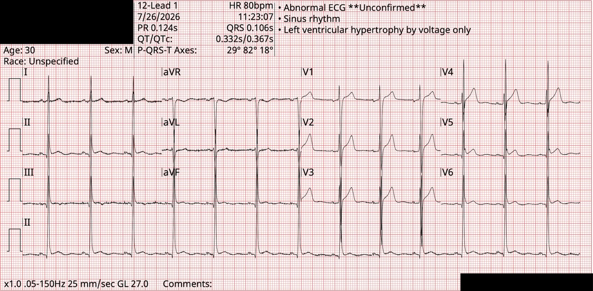
Điện tâm đồ 2

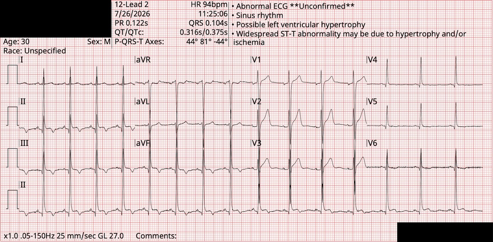
Điện tâm đồ 3

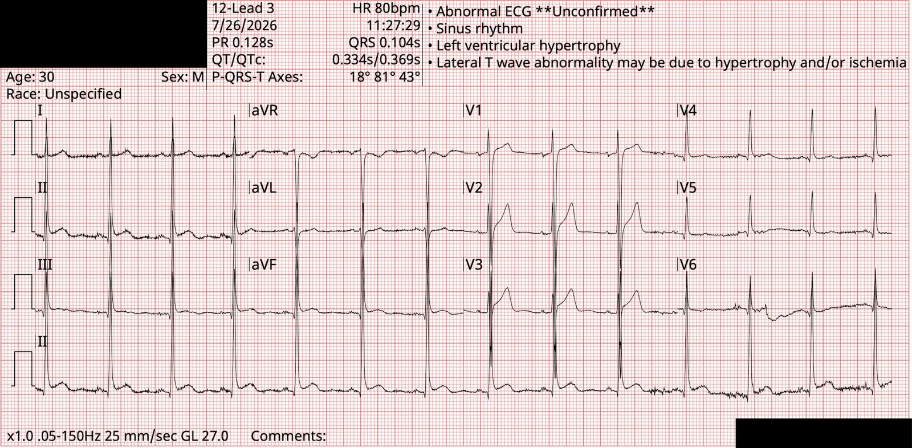
Điện tâm đồ 4

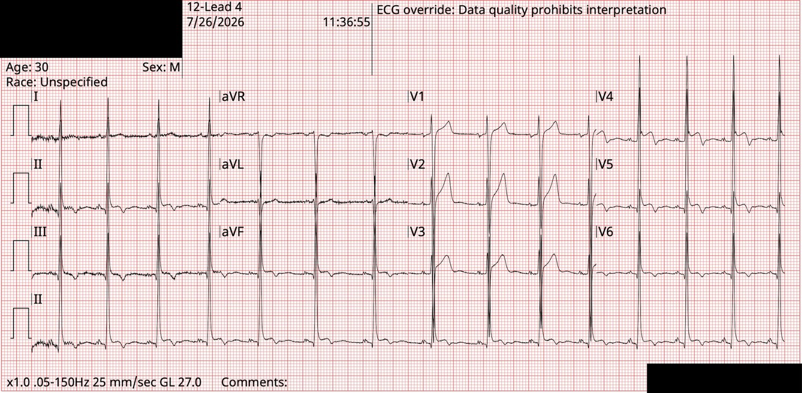
= = =
Smith: Mô hình AI điện tâm đồ thử nghiệm của PMCardio đánh giá điện tâm đồ này là 76.6% tái cực sớm (dương tính) và 33.7% viêm màng ngoài tim (không xác định).
= = =
Khi bệnh nhân đến bệnh viện, bệnh sử được ghi nhận bổ sung.
- Bệnh sử do điều dưỡng ghi nhận: “Bệnh nhân [được EMS đưa đến] than đau ngực (CP) x 1 giờ, đã được EMS cho nitroglycerin và aspirin (ASA). Khai rằng cơn đau xuất hiện đột ngột khi đang ở trạm xe buýt.”
- Điện tâm đồ được ghi lại tại khoa cấp cứu lúc 11:48, 12 phút sau điện tâm đồ 4.
Điện tâm đồ 5

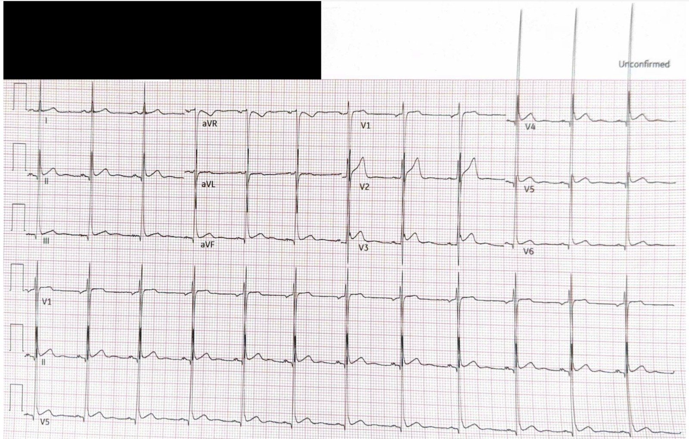
Bệnh sử do bác sĩ cấp cứu ghi nhận: “Bệnh nhân khai đang chờ xe buýt vào khoảng 1100 thì xuất hiện đau ngực bên trái. Mô tả là cảm giác đè ép sâu. Lan xuống bụng. Khai rằng trước đây từng có những cơn đau ngực đến rồi đi, nhưng chưa lần nào đau dữ dội như lần này. Có vã mồ hôi và khó thở kèm theo cơn đau.”
- Bác sĩ cấp cứu đã mời hội chẩn tim mạch.
- Một điện tâm đồ nữa được ghi lúc 12:37, 49 phút sau điện tâm đồ 4 [người dịch: theo các mốc giờ thì đúng hơn là sau điện tâm đồ thứ năm, nhiều khả năng là lỗi đánh máy].
Điện tâm đồ 6

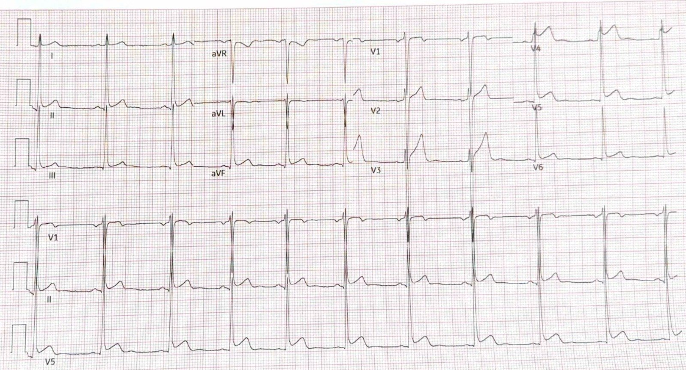
Smith: Mô hình AI điện tâm đồ thử nghiệm của PMCardio đánh giá điện tâm đồ này là 88.2% tái cực sớm (dương tính) và 3.8% viêm màng ngoài tim (cực kỳ ít khả năng).
Bệnh sử do bác sĩ tim mạch ghi nhận: “Bệnh nhân được đội cấp cứu ngoài viện đưa đến (BIBEMS) vì đau ngực bắt đầu 3-4 giờ trước khi đến viện. Trên đường cùng EMS, bệnh nhân đã được dùng nitroglycerin ngậm dưới lưỡi (SL NTG) và liều nạp aspirin (ASA), được ghi nhận là triệu chứng cải thiện. Tại khoa cấp cứu (ED), hội chẩn tim mạch cấp cứu vì thay đổi ST chênh lên (STE) có tính động, với STE ở gần như mọi chuyển đạo, một số chỗ đoạn PR chênh xuống, không có thay đổi soi gương. Khi tôi thăm khám, bệnh nhân khai đau ngực bên trái mức 6-7/10, không lan, nặng lên đột ngột vào sáng nay. Bệnh nhân cho biết đã để ý thấy đau ngực dai dẳng trong khoảng 4 tháng gần đây. Cơn đau thay đổi theo tư thế, tăng khi nằm thẳng, giảm khi cúi người ra trước. Cơn đau không tăng khi gắng sức và bệnh nhân cảm thấy đau tăng khi nghỉ ngơi. Bệnh nhân không nhớ có mắc bệnh gì trước khi khởi phát đau ngực 4 tháng trước.”
- Ghi chép của khoa tim mạch cũng đề cập không có tiếng cọ màng ngoài tim. Bệnh nhân được nhập viện để làm thêm xét nghiệm và theo dõi.
Bệnh sử khi nhập viện do khoa nội ghi nhận: Bệnh nhân kể có cảm giác khó chịu ở ngực từng lúc trong vài tháng qua. Bệnh nhân ghi nhận trong 2 tuần gần đây cũng bị đau đầu thường xuyên hơn. Bệnh nhân cho biết đã để ý thấy đau ngực trở nên dữ dội hơn trước vào khoảng 11 giờ sáng ngày 26/7, đánh giá mức độ đau là 10/10. Bệnh nhân mô tả cơn đau là cảm giác đè ép liên tục, không lan, tăng khi nghỉ ngơi hoặc nằm thẳng và giảm khi cúi người ra trước. Bệnh nhân cũng khai có sốt/rét run và khó thở vào ngày nhập viện, kèm theo cơn đau ngực.”
= = =
Trước khi đọc tiếp, bạn nghĩ chẩn đoán đúng là gì?
- A) Nhồi máu cơ tim cấp
- B) Viêm màng ngoài tim
- C) Viêm cơ tim
- D) Khác
= = =
Ca bệnh tiếp diễn …
Bác sĩ tim mạch hội chẩn nghi ngờ viêm màng ngoài tim và khuyến nghị điều trị bằng aspirin và colchicine, kèm siêu âm tim qua thành ngực và các dấu ấn viêm (ESR/CRP).
- Năm lần đo troponin I độ nhạy cao liên tiếp đều dưới ngưỡng phát hiện
- NT-proBNP dưới ngưỡng phát hiện
- ESR là 6 (tham chiếu: 1-15)
- CRP là 0.7 (tham chiếu: 0.7)
- Siêu âm tim cho thấy LVEF bình thường, vận động thành bình thường và “màng ngoài tim bình thường, không có tràn dịch màng ngoài tim”
Cuối cùng, đây là các điện tâm đồ đã ghi trước đây của bệnh nhân, trải dài trong 9 năm trước đó. Hãy nhớ rằng “sóng T đảo ngược lành tính” (Benign T-wave Inversion) là một dạng của tái cực sớm.
Năm 2017

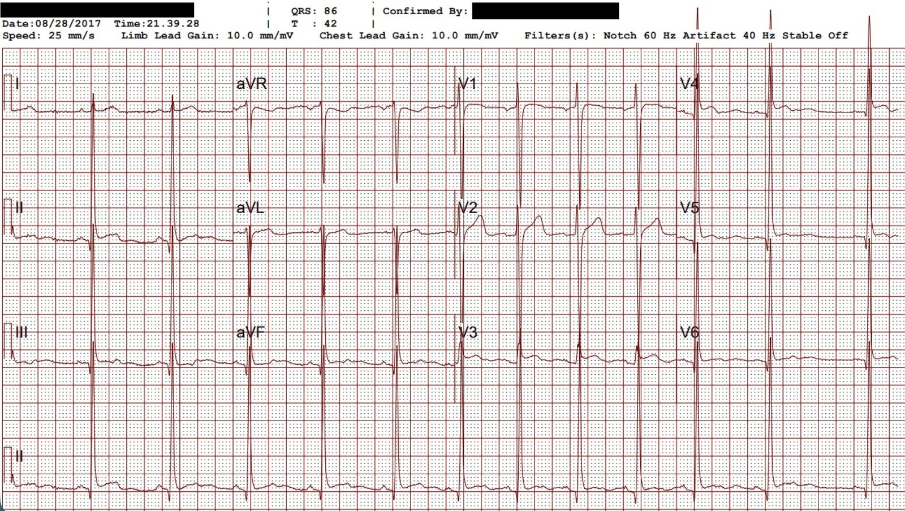
Năm 2019

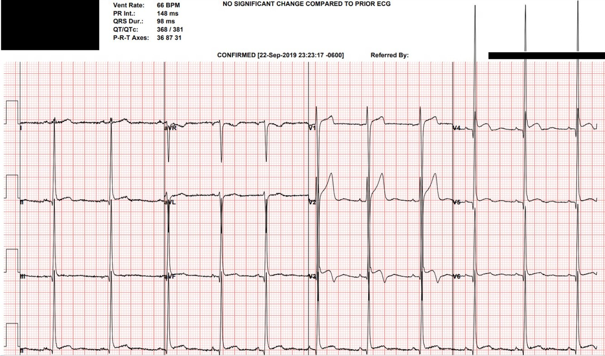
Smith: Mô hình AI điện tâm đồ thử nghiệm của PMCardio đánh giá điện tâm đồ này là 78.8% tái cực sớm (dương tính) và 24.5% viêm màng ngoài tim (âm tính).
= = =
Năm 2020

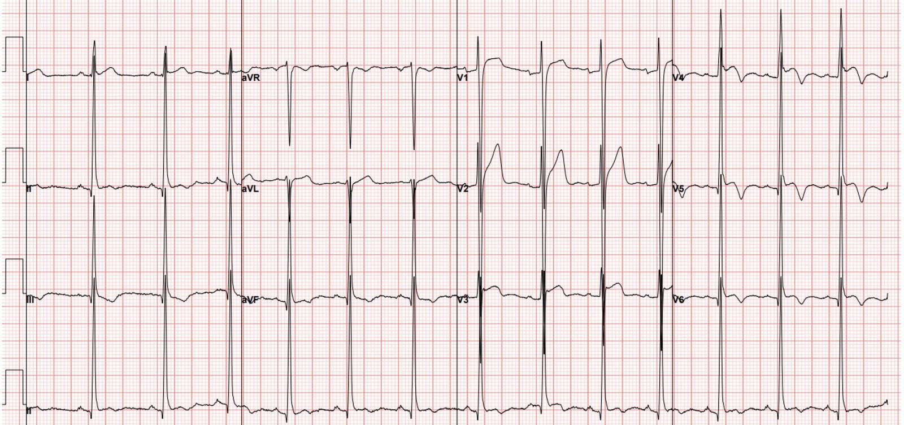
Smith: Mô hình AI điện tâm đồ thử nghiệm của PMCardio đánh giá điện tâm đồ này là 65.2% tái cực sớm (dương tính) và 21.9% viêm màng ngoài tim (âm tính).
= = =
Năm 2022

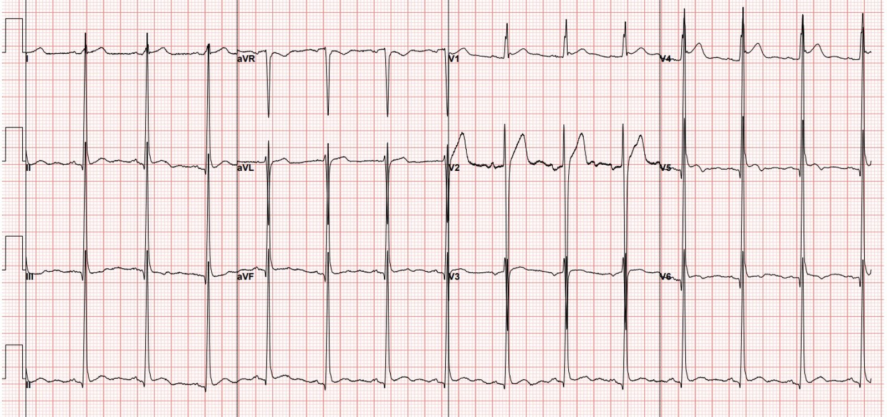
Năm 2023

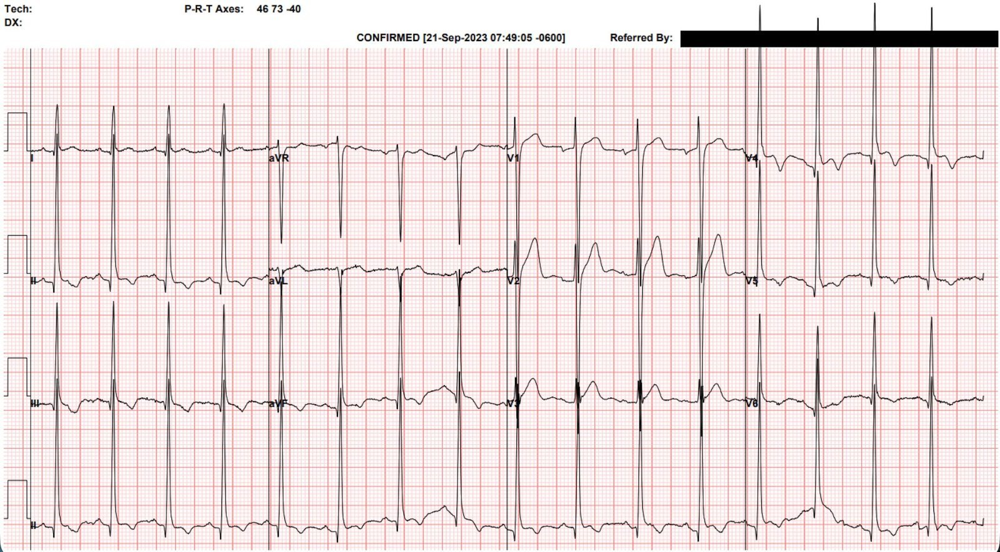
Chẩn đoán cuối cùng mà các bác sĩ điều trị đưa ra là viêm màng ngoài tim — và bệnh nhân được xuất viện với 3 tháng colchicine và một đợt ngắn ibuprofen.
= = =
Quay lại câu hỏi đặt ra ở trên — Chẩn đoán đúng là gì?
- – – – – D) Khác. ==> Đây là một điện tâm đồ biến thể bình thường.
- Nguyên nhân gây đau ngực chưa rõ, nhưng không liên quan gì đến tim hay điện tâm đồ.
= = =
Bàn luận
Blog đã đăng vô số ca về biến thể bình thường này, được gọi là “sóng T đảo ngược lành tính” (benign T wave inversion). Đây là một ca gần đây, và đây là một danh mục đầy đủ hơn về các ca tương tự.
Chúng tôi đã điểm lại vấn đề này trong các bài trước, nhưng vẫn đáng nói ra bằng những lời rõ ràng, minh bạch:
- Điện tâm đồ này KHÔNG phải thiếu máu cục bộ
- Điện tâm đồ này KHÔNG biểu hiện viêm màng ngoài tim
- Điện tâm đồ này KHÔNG biểu hiện LVH
Đây là một SỰ THẬT gây bực bội và khó hiểu: bệnh nhân có thể đến viện với thay đổi điện tâm đồ có tính động và ST chênh lên, nhưng vẫn không có bất kỳ bệnh lý tim cấp tính nào.
- Mô hình STEMI đã đầu độc bộ não chúng ta, khiến ta nghĩ rằng mọi ST chênh lên đều là bệnh lý, và ý tưởng độc hại này chính là mấu chốt của sai sót chẩn đoán trong ca này.
= = =
Tôi nghĩ ở đây còn ít nhất hai bài học hay nữa về chăm sóc bệnh nhân.
1. Rất dễ khai thác được bệnh sử xác nhận điều mình đang nghi ngờ.
Ở đây ta thấy một sự thay đổi rõ ràng trong bệnh sử được ghi chép.
- Bệnh sử của EMS và điều dưỡng cho thấy đau ngực cấp kèm vã mồ hôi, cải thiện với nitroglycerin, phù hợp với chẩn đoán ACS mà họ nhận định.
- Bệnh sử của bác sĩ cấp cứu mô tả đau ngực bên trái lan xuống bụng kèm vã mồ hôi và khó thở. Cơn đau được mô tả là cảm giác đè ép sâu, một lần nữa phù hợp với ACS.
- Bệnh sử của bác sĩ tim mạch đã thay đổi đáng kể, giờ là cấp tính trên nền mạn tính, không lan, và đau tăng khi nằm ngửa. Phù hợp với viêm màng ngoài tim hơn nhiều.
- Bệnh sử của khoa nội có một số đặc điểm của cả hai — đau kiểu đè ép cấp tính trên nền mạn tính, tăng khi nghỉ ngơi và khi nằm ngửa, kèm sốt và rét run.
Vấn đề KHÔNG phải là một số bác sĩ khai thác bệnh sử tốt còn số khác khai thác kém. Mà là việc khai thác bệnh sử là một quá trình hai bên (bác sĩ và bệnh nhân) với ảnh hưởng qua lại hai chiều. Đặt câu hỏi dẫn dắt là một thiên kiến cố hữu của con người. Chúng tôi không có mặt khi các bác sĩ nói trên khai thác bệnh sử, nên chúng tôi không biết họ có đặt câu hỏi dẫn dắt hay không.
- Một câu hỏi dẫn dắt là: “Cơn đau có tăng lên khi anh nằm xuống không?”
- Một câu hỏi không dẫn dắt là: “Có điều gì làm cơn đau tăng lên không?”
Cần nhớ rằng bệnh sử là một xét nghiệm chẩn đoán, và giống như mọi xét nghiệm chẩn đoán, nó không hoàn hảo.
= = =
2. Thiên kiến neo (anchoring bias) là một nguồn gây sai sót chẩn đoán rất mạnh.
Trong ca này, các bác sĩ điều trị cho bệnh nhân có thể không phải là độc giả của blog, hoặc nếu có thì họ đã quên mất sóng T đảo ngược lành tính. Điện tâm đồ rất khó. Đa số bác sĩ sẽ không chẩn đoán được điều này bằng điện tâm đồ, và đó là sự thật. Với sự xuất hiện của AI, khả năng chẩn đoán bằng điện tâm đồ của chúng ta sẽ cải thiện đáng kể. (Queen of Hearts (QOH) đánh giá không phải OMI ở tất cả các điện tâm đồ). Chắc chắn trong vòng vài năm tới chúng ta sẽ có những mô hình có thể chẩn đoán hoặc loại trừ viêm màng ngoài tim với độ chính xác tốt.
Nhưng CẢ viêm màng ngoài tim lẫn OMI đều là chẩn đoán lâm sàng, không được định nghĩa bằng điện tâm đồ. Trong trường hợp của bệnh nhân này, chúng ta có nhiều lý do để bác bỏ chẩn đoán viêm màng ngoài tim.
- Các dấu ấn viêm bình thường
- Không có tràn dịch màng ngoài tim
- Không có tiếng cọ màng ngoài tim
- Đau kiểu đè ép (đau do viêm màng ngoài tim phải là đau nhói)
- Điện tâm đồ ổn định (hoặc ít nhất là tương đối ổn định) suốt 9 năm
AI sẽ không phải là lời giải cho thiên kiến nhận thức; thực tế nó còn có thể củng cố các thiên kiến của chúng ta, đặc biệt vì nó cần khối lượng lớn dữ liệu đã được chú giải để huấn luyện. Nếu các bác sĩ tim mạch nhận định điện tâm đồ này là phù hợp với viêm màng ngoài tim — tôi lo ngại điều đó có thể có ý nghĩa gì đối với các mô hình AI trong tương lai.
= = =
Những điểm cần học
- Hãy học cách nhận ra điện tâm đồ ST chênh lên biến thể bình thường này.
- Giữ các câu hỏi bệnh sử ở dạng mở, cố gắng không dẫn dắt bệnh nhân.
- Khi tích lũy thêm dữ liệu, hãy quay lại chẩn đoán phân biệt và tự hỏi điều gì phù hợp và điều gì không.
- Tái cực sớm có thể thay đổi động! Không phải mọi sự tiến triển và không phải mọi ST chênh lên tăng dần đều là tiến triển do thiếu máu cục bộ hay STE. Xem các bài/ca trên blog sau, kèm hai tài liệu tham khảo hỗ trợ:
- 1. Chest pain and Convex ST Elevation in Precordial Leads (Đau ngực và ST chênh lên dạng lồi ở các chuyển đạo trước tim)
- 2. Increasing ST elevation. STEMI vs. dynamic early repolarization vs. pericarditis. (ST chênh lên tăng dần. STEMI so với tái cực sớm có tính động so với viêm màng ngoài tim.)
= = =
==================================
BÌNH LUẬN CỦA TÔI, bởi KEN GRAUER, MD (7/10/2026):
Một ca quan trọng của Dr. Frick! Nhiều điểm được làm nổi bật:
- Nếu bạn đang tìm kiếm một chẩn đoán nhất định — bạn sẽ dễ khai thác được những dấu hiệu ủng hộ chẩn đoán đang được tìm kiếm đó hơn.
- Viêm màng ngoài tim cấp không thường gặp. Khi tỷ lệ hiện mắc của một bệnh thấp — thì đa số các ca mơ hồ sẽ là dương tính giả. Ngược lại, khi tỷ lệ hiện mắc của một bệnh cao hơn nhiều — thì tỷ lệ phần trăm các ca mơ hồ hóa ra là dương tính thật sẽ lớn hơn đáng kể.
- Mặc dù tôi đã cố công tìm kiếm các bất thường điện tâm đồ — tôi không nghĩ rằng nhiều điện tâm đồ liên tiếp trong ca hôm nay có giá trị chẩn đoán viêm màng ngoài tim cấp hay OMI cấp. (Xem phần bàn luận về Hình 1 bên dưới).
- Thay vào đó, điều gây ấn tượng nhất với tôi ở nhiều bản ghi trong ca hôm nay — là sự thay đổi của tần số tim và của vị trí đặt điện cực các chuyển đạo trước tim. Ví dụ — sóng T đảo ngược tăng lên đặc biệt ở các chuyển đạo thành dưới trong điện tâm đồ #2, là bản ghi có tần số tim nhanh nhất. Tác động của việc đặt điện cực trước tim không nhất quán có lẽ được nhận ra rõ nhất khi lướt qua 6 điện tâm đồ liên tiếp và tập trung vào chuyển đạo V4, nơi biên độ sóng R nhỏ chỉ 5 mm (ở điện tâm đồ #6) — nhưng lớn tới 40 mm ở điện tâm đồ #5. Điều cốt lõi: Tôi không nghĩ những khác biệt nhỏ về hình thái QRST quan sát được qua 6 bản ghi liên tiếp trong ca hôm nay đủ để được coi là những thay đổi “động” thực sự.
- LƯU Ý: Có một xét nghiệm xác định chẩn đoán viêm màng ngoài tim cấp = MRI tim (đặc biệt với LGE = ngấm thuốc muộn gadolinium). Do còn chưa chắc chắn về chẩn đoán ở người đàn ông 30 tuổi này, người đã được ghi nhiều điện tâm đồ trong 9 năm trước đó — đánh giá bằng MRI tim có vẻ là có chỉ định (Bài tổng quan hay của Baser và cs. về việc sử dụng và giá trị chẩn đoán của MRI tim trong xác định viêm màng ngoài tim cấp tại liên kết này — Methodist Debakey Cardiovascular J: 22(2):41-49, 2026).
= = =
Điện tâm đồ ban đầu của ca hôm nay …
Việc đánh giá các điện tâm đồ liên tiếp của bệnh nhân này trở nên phức tạp do tiền sử tăng huyết áp, yếu tố dễ dẫn đến LVH. Dù vậy — có những đặc điểm gợi ý một biến thể tái cực trên các bản ghi liên tiếp của bệnh nhân này. Như tôi đã đề cập ở trên — những đặc điểm này thay đổi đôi chút từ bản ghi này sang bản ghi khác (ít nhất một phần do tần số tim thay đổi và vị trí đặt điện cực trước tim không nhất quán). Để đơn giản — tôi giới hạn bình luận của mình ở điện tâm đồ ban đầu (được ghi lúc 11:23:07 trong ca hôm nay) — mà tôi đã đặt lại trong Hình 1. Tôi cho rằng 5 bản ghi sau đó phản ánh các biến tấu trên cùng “chủ đề” mà chúng ta thấy ở điện tâm đồ #1. Hãy lưu ý những điểm sau trong điện tâm đồ ban đầu này:
- Biên độ QRS tăng rõ rệt, với sóng R chồng lấn lên sóng S ở nhiều chuyển đạo. Do biên độ QRS lớn như vậy — mức ST chênh lên quan sát được không có vẻ quá mức.
- Tăng tiến sóng R bình thường.
- QTc có vẻ tương đối ngắn.
- Trát đậm phần cuối của QRS (“trát đậm” nhìn chung được chấp nhận như một dấu hiệu biến thể tái cực thay thế cho khía điểm J) — được thấy ở nhiều chuyển đạo (các mũi tên VÀNG trong Hình 1).
Những suy nghĩ bổ sung về ca hôm nay:
- Sóng T đảo ngược là một đặc điểm xuất hiện từng lúc trong 6 bản ghi liên tiếp của ca hôm nay — nhưng khi có mặt, nó đi kèm với biên độ QRS tăng rõ rệt, “trát đậm” phần cuối QRS, và ST chênh lên ở chính những chuyển đạo có sóng T đảo ngược. Hình ảnh tổng hợp này được nhận thấy rõ nhất ở các chuyển đạo ngực bên V4,V5,V6 của điện tâm đồ #4 — các chuyển đạo có dáng vẻ “trông” lành tính.
- Để biết thêm về sự phức tạp của các hình ảnh tái cực sớm và sự kín đáo của “trát đậm” phần cuối QRS — Hãy xem Bình luận của tôi ở cuối trang trong bài ngày 5 tháng Hai năm 2026.
- Ngược lại, với viêm màng ngoài tim cấp — sóng T đảo ngược thường không xuất hiện ở thời điểm vẫn còn ST chênh lên. Vì vậy, sóng T đảo ngược nổi bật ở điện tâm đồ #2 và 4, đi kèm ST chênh lên ở chính các chuyển đạo đó, là một điểm nữa chống lại chẩn đoán viêm màng ngoài tim cấp.
= = =
Hình 1: Điện tâm đồ đầu tiên trong số nhiều điện tâm đồ được ghi trong ca hôm nay.

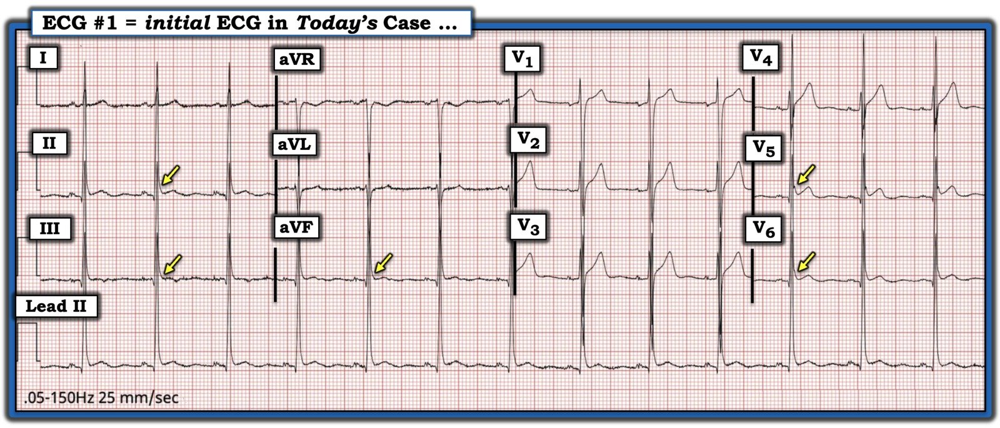
= = =
Những khái niệm “cần nhớ” bổ sung:
- Các bản ghi biến thể tái cực đôi khi cho thấy thay đổi hình thái ST-T qua các bản ghi liên tiếp. Đây không phải là thay đổi động do thiếu máu cục bộ.
- Điều thiết yếu là phải đảm bảo rằng trục mặt phẳng trán và dáng vẻ các chuyển đạo ngực (tức là tăng tiến sóng R & biên độ QRS tương đối) là tương tự nhau khi so sánh các điện tâm đồ liên tiếp. Nếu không, bạn không so sánh “táo với táo” — mà đang trộn lẫn cả “cam” vào. Theo kinh nghiệm của tôi — khái niệm này quá thường xuyên bị bỏ qua (kể cả bởi những người đọc điện tâm đồ giàu kinh nghiệm) khi so sánh các bản ghi liên tiếp.
- Hình ảnh điện tâm đồ của viêm màng ngoài tim cấp tiến triển theo thời gian — nhưng không phải trong khoảng vài phút (như các nhận xét của bác sĩ lâm sàng trong ca hôm nay gợi ý). Sự thay đổi vị trí đặt điện cực trước tim có vẻ là lời giải thích hợp lý hơn nhiều cho những khác biệt rõ rệt đến bất ngờ về dáng vẻ các chuyển đạo ngực giữa một số bản ghi liên tiếp.
- Ngoài sóng T đảo ngược và ST chênh lên xuất hiện đồng thời — các dấu hiệu điện tâm đồ khác xuất hiện trên 6 bản ghi liên tiếp hôm nay không điển hình cho viêm màng ngoài tim cấp. Bao gồm: i) “Trát đậm” phần cuối QRS ở nhiều chuyển đạo, vốn rất thường gặp ở các biến thể tái cực; — ii) Hình thái ST-T của chuyển đạo II giống chuyển đạo III hơn ở một số bản ghi liên tiếp (thay vì giống chuyển đạo I); — và, iii) Tỷ số ST/sóng T giảm (Xem Bình luận của tôi ở cuối trang trong bài ngày 15 tháng Sáu năm 2025 — để biết thêm “Quan điểm của tôi” về các dấu hiệu điện tâm đồ trong viêm màng ngoài tim cấp).
= = =
Suy nghĩ cuối cùng …
Vậy — TẠI SAO bệnh nhân hôm nay tiếp tục bị đau ngực dữ dội (tới 10/10) đến vậy?
- Cơn đau ngực (CP) này dường như đã kéo dài dai dẳng theo thời gian, xét theo nhiều điện tâm đồ lặp lại trong hồ sơ của bệnh nhân được ghi trong 9 năm qua. Tôi nghi rằng bệnh nhân này sẽ tiếp tục đến các khoa cấp cứu vì triệu chứng của mình trừ khi (cho đến khi) chúng ta xác định được nguyên nhân gây ra cơn đau ngực đôi lúc rất dữ dội của bệnh nhân.
- Nhận thấy rằng chúng ta không biết thêm chi tiết về ca này — tôi xin suy đoán rằng nguyên nhân gây đau ngực của bệnh nhân này nhiều khả năng nhất là: i) Do cơ xương khớp; — hoặc ii) Nhiều khả năng hơn, do tâm lý-xã hội — với lo âu mạn tính, hoảng loạn, trầm cảm, hoặc lạm dụng chất là “thủ phạm” có khả năng.
Nếu tôi khám bệnh nhân này tại phòng khám của mình — tôi sẽ:
- Làm một nghiệm pháp gắng sức trên thảm lăn đơn giản với sự có mặt của tôi — mong khuyến khích bệnh nhân này đạt gần nhất có thể tần số tim tối đa dự đoán trên thảm lăn (Xem liệu điều này có gây ra bất kỳ thay đổi ST-T bất thường nào với cùng vị trí đặt điện cực trước tim hay không — cũng như mong xem liệu tôi có thể tái hiện triệu chứng của bệnh nhân ở một mức gắng sức nào đó hay không);
- Tôi sẽ khai thác đầy đủ tiền sử tâm lý-xã hội — tìm các yếu tố lo âu mạn tính, hoảng loạn, trầm cảm, và/hoặc lạm dụng chất.
= = =
= = =